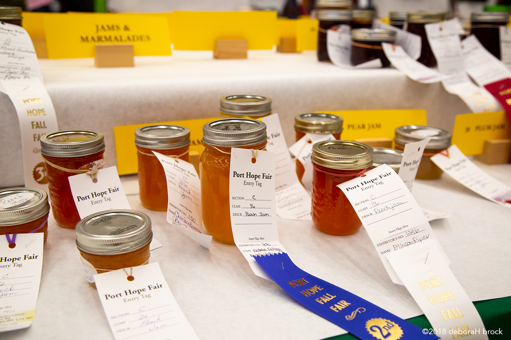
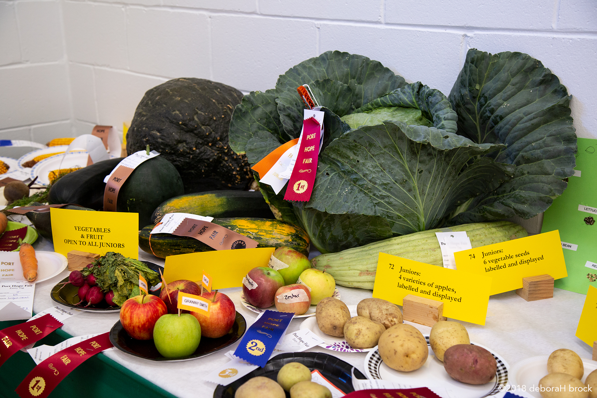
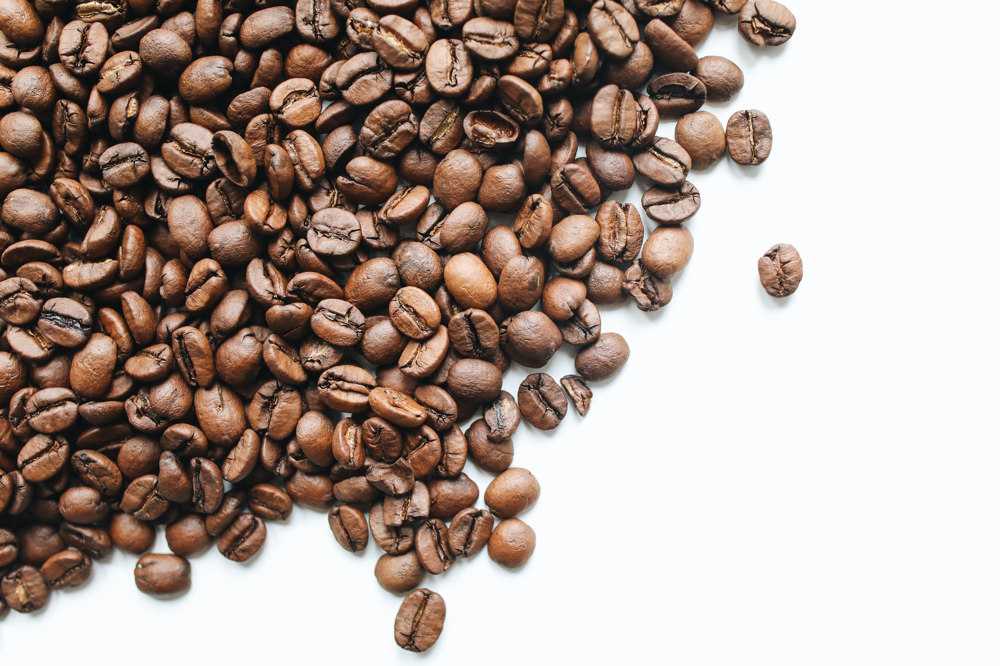

Local Market
|  | Brooklin Flavours | Fruits (Raspberry/ Pear/ Plum) Jams and Jellies | Booth InfoThis new vendor offers a wide range of interesting flavours!Unique flavours of homemade jams and jellies to satisfy any craving! |
|  | Windsfield Gardens | Veggies (Cabbage/ Carrot/ Beetroot) and Fruits (Red Luv Apples) | Booth InfoWindsfield Gardens is your local Community Shared Agriculture (CSA) Farm.Growing fresh, local certified organic vegetables, farm-raised meat and eggs for your family from their family farm in Janetville, Ontario. |
 |
North of 7 Designs | Handcraft carpets, woodworking, home decor, & more | Booth InfoThe heart of North of 7 Designs is our indelible connection to nature.It is my mission to bring the beauty of nature, indoors. Visit this vendor and bring a little natural beauty into your home |
|  | Tallboy Roasters | Coffee Beans | Booth InfoThe husband and wife team of Leslie and Rick Bosman started roastingethically sourced, premium, single origin coffee beans right here in Port Hope in 2018. Find small batch, fresh roasted beans by the bag as well as the perfect espresso based drinks including French vanilla and cinnamon bun lattes, salted caramel macchiatos or a delicious café Americano. All this delivered by a trained barista on their eco-friendly solar/electric espresso bike! |
So Much More !!!
The Port Perry Lakefront Farmers' Market has many wonderful vendors offering
farm-fresh produce, flowers, plants and seeds, cider, local honey, maple syrup,
delicious pastries, coffee, wine, sweet treats, unique clothing, soaps, jewelry,
crafts, metal, woodworking and so much more!
Interested in becoming a vendor?